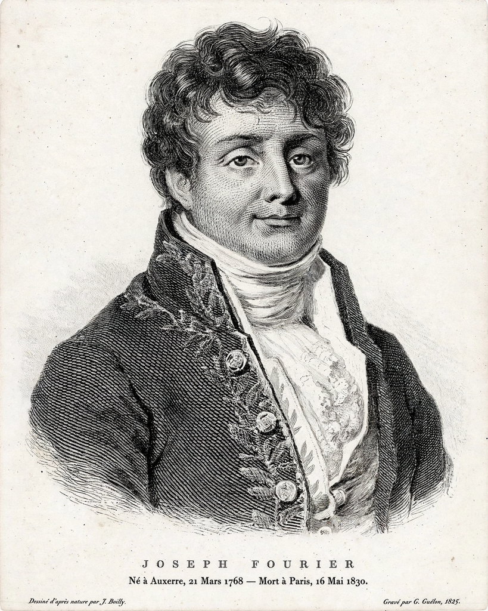

Joseph Fourier
| Joseph Fourier | |
|---|---|
| Born | 21 March 1768, Auxerre, France |
| Died | 16 May 1830, Paris, France |
| Field | Mathematics, physics |
| Known for | Fourier series; early greenhouse-effect reasoning |

Jean-Baptiste Joseph Fourier (1768–1830) was a French mathematician and physicist remembered chiefly for Fourier analysis — the decomposition of functions into sinusoids — and for the first scientific discussion of why Earth is warmer than bare-rock physics predicts, the seed of the {L('Greenhouse_effect')} concept.
Fourier accompanied Napoleon to Egypt, governed a French department, and wrote his masterwork, the Théorie analytique de la chaleur (1822), while the mathematics he invented for heat flow became indispensable across physics and engineering.
Heat and the atmosphere
In memoirs of 1824 and 1827, Fourier calculated that Earth, given its distance from the Sun, should be far colder than it is, and identified the atmosphere as the insulator responsible — comparing its action (imperfectly, as later physics showed) to the glass of a hothouse. He also recognised that human activity could, in principle, modify climates. The line of work ran from Fourier through {L('John_Tyndall')} to {L('Svante_Arrhenius')}.
Mathematics
Fourier's claim that arbitrary functions could be represented by trigonometric series was controversial in his lifetime and foundational ever after: Fourier series and the Fourier transform now underpin signal processing, spectroscopy, quantum mechanics and the study of heat and waves — including, fittingly, the spectral methods by which the greenhouse effect itself is calculated.
See also: Greenhouse effect · John Tyndall · Svante Arrhenius · Climate change